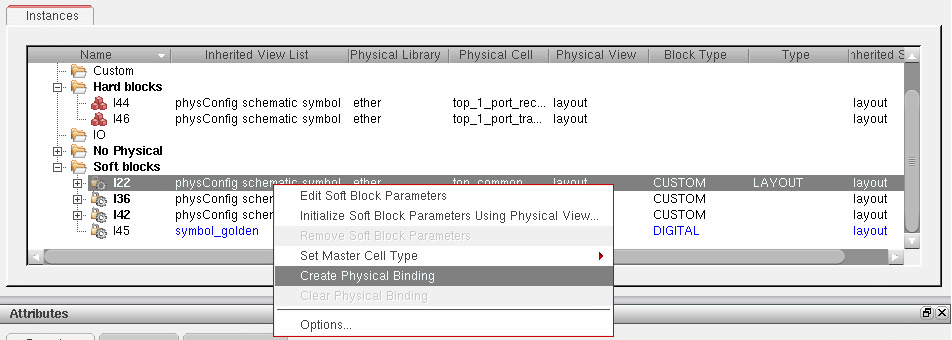

Creating a Physical Binding
- In the table view, select the instance for which you want to set a physical binding.
-
Click the right mouse button and choose Create Physical Binding.
The physical binding is created.
Removing a Physical Binding
- In the table view, select the instance for which you want to remove the physical binding.
-
Click the right mouse button and choose Clear Physical Binding.
The physical binding is removed, along with any soft block parameters defined for the instance in question.
To remove soft block parameters but preserve the physical binding, click the right mouse button and choose Remove Soft Block Parameters.
Related Topics
Soft Block Mode in the CPH Window
Return to top